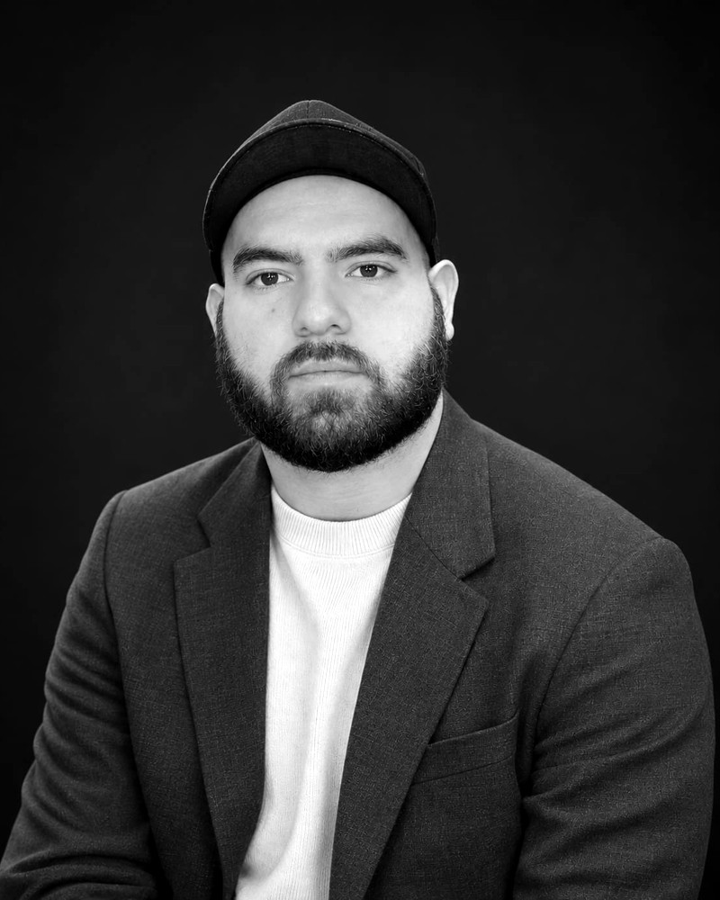
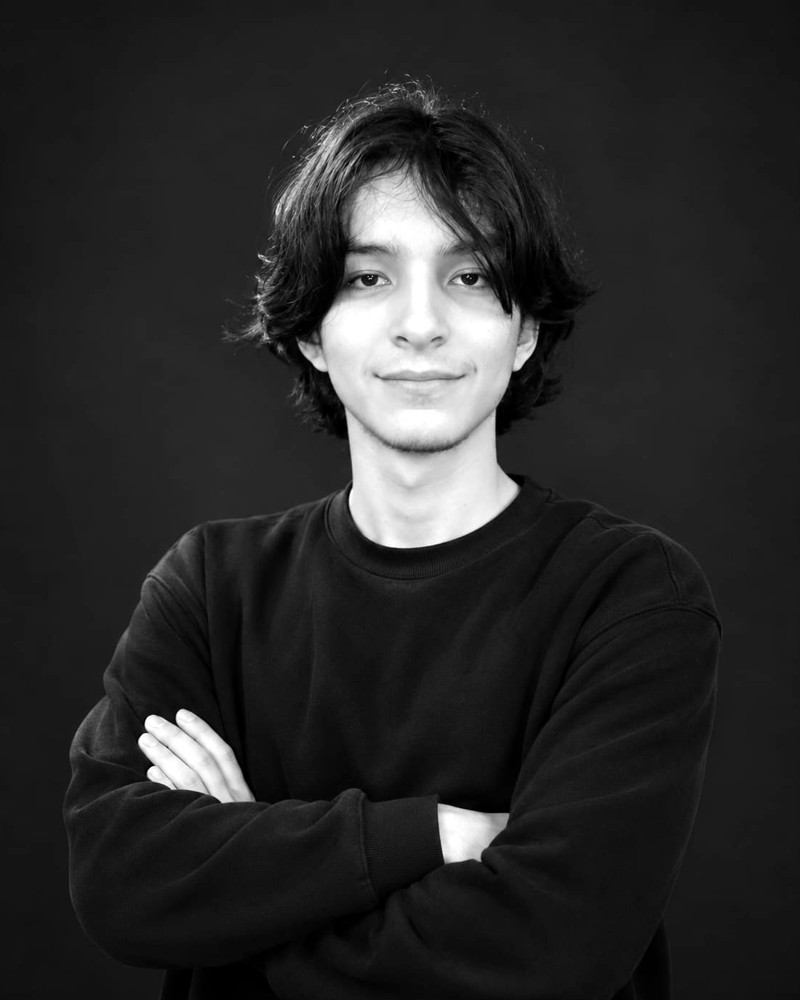

Piloto · 2027–2028
Metropolitano
Accesos al estadio, Calle 45 y vías de llegada. Incluye la central única.

IngeniaCity Barranquilla 2034Movilidad que se adapta
backtrack propone una red de semáforos inteligentes para dar prioridad a quienes más lo necesitan y hacer más accesibles los cruces de Barranquilla.
En una ciudad que cambia con cada temporada, los tiempos fijos no distinguen una calle vacía de otra con cola. Una ambulancia, un bus lleno y un carro particular pueden esperar el mismo verde.
El Mundial 2034 hará más visible ese reto en los accesos al estadio, el aeropuerto, el centro, el Gran Malecón y la zona norte.
Fuentes citadas en el documento técnico: Alcaldía de Barranquilla y El Universal, abril de 2026.
Una red por sectores
Las cámaras observan la calzada y un equipo local cuenta vehículos por tipo. Una central recibe esos conteos y coordina los tiempos de los cruces de cada sector. El controlador aplica los cambios con reglas de seguridad.
Conoce cómo funcionaPrioridad de paso propuesta
La central puede coordinar una ola verde entre intersecciones del sector para facilitar el paso de los servicios de emergencia.
El video se procesa en la intersección. Hacia la central viajan conteos, no imágenes ni placas.
Cuatro cámaras y cuatro Raspberry Pi cuentan vehículos por tipo en cada acceso.
Un switch y un router 4G/5G envían los conteos JSON por MQTT.
La central calcula nuevos tiempos según las colas y las prioridades del sector.
El PLC controla las luces y respeta mínimos, máximos y fases de seguridad.
Cuando la conexión cae, el semáforo conserva su plan, puede volver a ciclo fijo y guarda conteos localmente para sincronizarlos después.
Ver diagrama técnicoUn cruce para distintas personas
La botonera propuesta permite pedir un paso normal o un cruce extendido con una pulsación de tres segundos. Relieve, señal sonora, vibración y pictogramas buscan hacerla más fácil de usar. Su diseño se validaría con asociaciones de personas con discapacidad.
La simulación muestra la llegada de vehículos, el paso prioritario de una ambulancia y una solicitud de cruce accesible en una intersección del sector de la avenida Murillo.
Explorar el prototipoEl prototipo muestra la lógica propuesta en una simulación; todavía no representa una instalación en vía pública.
Pensado para Barranquilla
El diseño preliminar calcula un consumo de unos 97 W por intersección. Dos paneles solares de 450 Wp cubren parte de esa demanda; una versión con batería de 7 kWh busca mantener el cruce activo durante cortes de energía.
Cifras preliminares del equipo sujetas a ingeniería de detalle y cotizaciones.
El piloto mediría la reducción del tiempo de espera frente a un semáforo de tiempo fijo antes de ampliar la red a otras zonas.
Accesos al estadio, Calle 45 y vías de llegada. Incluye la central única.
Corredor del aeropuerto, centro histórico, Gran Malecón y norte.
Extensión referencial después del Mundial, sujeta a validación técnica.
Inversión estimada para las fases 1 y 2, con 10 % de contingencia
COP 1.511–1.885 M34 intersecciones · sin / con bateríaUn equipo de la Corporación Universitaria Americana que reúne tecnología, estrategia, inteligencia artificial, software y seguridad operacional.

Director tecnológico
Director de estrategia y desarrollo de negocio

Director de inteligencia artificial
Líder de desarrollo de software
Líder de seguridad operacional y gestión de riesgo
El siguiente paso
Un piloto de seis intersecciones para medir, aprender y ajustar la movilidad de Barranquilla con datos y participación ciudadana.
Explorar el prototipo